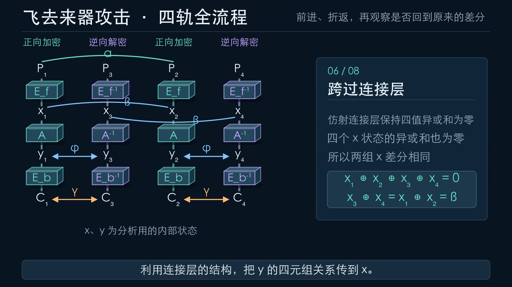

飞去来器攻击与矩形攻击¶
来源：
密码分析学 / notes/03-差分分析/飞去来器攻击.md
经典飞去来器攻击动画¶

播放四轨立体图解版动画 · 观看原版动画 · 动画源码与制作说明
四轨立体图解版参照课件，始终保留 \(P_1,P_3,P_2,P_4\) 四条轨道：先正向加密，再通过两条 \(\gamma\) 边构造回程密文，逆向分析两条 \(\phi\) 边，最后通过中间四元组关系解释差分回传。动画配有中文旁白与字幕；图中的中间状态用于解释差分传播。
 非线性变换的差分传播通常有多种可能；线性变换则按确定的线性规则传播差分，即 \(\Delta(L(x))=L(\Delta x)\)。
那我们可能在第一个非线性变换有非常好的一个差分路线
在后面的非线性变换又有一个好的差分路线
非线性变换的差分传播通常有多种可能；线性变换则按确定的线性规则传播差分，即 \(\Delta(L(x))=L(\Delta x)\)。
那我们可能在第一个非线性变换有非常好的一个差分路线
在后面的非线性变换又有一个好的差分路线
 但是连接处的差分不一样，连不起来，比如前面的是从\(\alpha\)到\(\beta\),后面是从\(\phi\)到\(\gamma\),那这两条路线合不在一起
那怎么充分利用呢
课件在中间使用线性层，可以利用四个状态的异或关系连接两段差分。
但是连接处的差分不一样，连不起来，比如前面的是从\(\alpha\)到\(\beta\),后面是从\(\phi\)到\(\gamma\),那这两条路线合不在一起
那怎么充分利用呢
课件在中间使用线性层，可以利用四个状态的异或关系连接两段差分。
为什么要把两段短差分“错位”连接¶
普通差分攻击要沿同一对文本串接差分；如果前、后两段各有高概率差分，但它们在连接处的差分不相同，就无法直接串接。
飞去来器攻击改用四个文本构成的四元组：上段差分走横向，下段差分走纵向，让连接处形成平行四边形。课件把密码写成 \(E=E_b\circ A\circ E_f\)，其中连接层 \(A(x)=L(x)\oplus a\) 的线性部分 \(L\) 可逆；线性变换是 \(a=0\) 的特殊情况。
后文用 \(P_i\) 表示明文、\(C_i\) 表示对应密文，记 \(x_i=E_f(P_i)\)、\(y_i=A(x_i)\)。四元组的四个位置可以排成：
图上标的是目标关系：明文侧的横边差分记作 \(\alpha\)，密文侧的竖边差分记作 \(\gamma\)。经典攻击主动构造右侧两条竖边、检查左侧下边；增强攻击先构造左侧两条横边、检查右侧两条竖边。

经典飞去来器区分器¶
设前半部分存在 \(\alpha\xrightarrow{E_f}\beta\)，正向概率为 \(p_1\)；后续需要的反向差分 \(\beta\xrightarrow{E_f^{-1}}\alpha\) 概率为 \(p_2\)。后半部分存在 \(\gamma\xrightarrow{E_b^{-1}}\phi\)，概率为 \(q\)。 构造过程如下：
- 选择 \(m_1,m_2\)，使 \(m_1\oplus m_2=\alpha\)，并取得 \(C_1=E(m_1),C_2=E(m_2)\)。
 我们确实构造了一组输入差分，这样用到了第一个差分，但是问题是，我们没办法控制他们的输出啊，输出差分又不一定是\(\gamma\),那咋办呢，那就杀一个回马枪，
没错\(c_1,c_2\)的差分不是\(\gamma\)
你不是要和\(c_1\)差分为\(\gamma\)的输出吗，那我直接造一个
我们确实构造了一组输入差分，这样用到了第一个差分，但是问题是，我们没办法控制他们的输出啊，输出差分又不一定是\(\gamma\),那咋办呢，那就杀一个回马枪，
没错\(c_1,c_2\)的差分不是\(\gamma\)
你不是要和\(c_1\)差分为\(\gamma\)的输出吗，那我直接造一个 - 选择新的密文 \(C_3=C_1\oplus\gamma\)、\(C_4=C_2\oplus\gamma\)
诶。我直接回头强行造一个\(c_3\)出来，那回头这条路线，就可以用输出那个差分路线了啊
同样\(c_4\)也是一样
然后我们都解密一下，这样就到了上一层
 我们前面构造的输出差分都是\(\gamma\),那么这边回到y，差分也应该都是\(\phi\),当然这不是必然的，这是高概率的差分
诶，那我们发现这就构成了一个平行四边形，四个y异或起来等于0
那这一层是线性层，x异或起来也是0
那么也就是说，\(x_3 \oplus x_4 = x_1 \oplus x_2\),那么也就是说，有很大的概率\(m_3 \oplus m_4 =\alpha\),这可以作为一个区分器
我们前面构造的输出差分都是\(\gamma\),那么这边回到y，差分也应该都是\(\phi\),当然这不是必然的，这是高概率的差分
诶，那我们发现这就构成了一个平行四边形，四个y异或起来等于0
那这一层是线性层，x异或起来也是0
那么也就是说，\(x_3 \oplus x_4 = x_1 \oplus x_2\),那么也就是说，有很大的概率\(m_3 \oplus m_4 =\alpha\),这可以作为一个区分器 - 检查 \(m_3\oplus m_4=\alpha\) 是否明显比随机置换更常发生。

若第一条上段差分、两条下段差分和返回时的上段差分均成立，连接处的四个状态就满足异或和为 \(0\)。线性或仿射层保持这一四元组关系，于是 \(P_3\oplus P_4=\alpha\)。在课件采用的独立性近似下，成功概率约为
若两个方向的上段概率同为 \(p\)，即为 \(p^2q^2\)。对 \(n\) 比特随机置换，检查非零指定差分的基准概率约为 \(2^{-n}\)；因此 \(p^2q^2>2^{-n}\)，等价于 \(pq>2^{-n/2}\)，是该独立近似模型下区分器优于随机基准的条件。

所以这个p和q都有提升空间
 咱们可以把多条路线都用上
咱们可以把多条路线都用上
经典攻击为什么能回到 \(\alpha\)？¶
按四元组逐步看每个条件：
- 明文到中间： 主动设置 \(P_1\oplus P_2=\alpha\)。当第一条上段差分命中时，\(x_1\oplus x_2=\beta\)，概率为 \(p_1\)。
- 密文回到中间： 主动设置 \(C_3=C_1\oplus\gamma\)、\(C_4=C_2\oplus\gamma\)，并查询两次解密。若两条下段逆向差分均命中，则 \(y_1\oplus y_3=y_2\oplus y_4=\phi\)，按独立近似概率为 \(q^2\)。
- 利用四元组关系： 两式异或得到 \(y_1\oplus y_2\oplus y_3\oplus y_4=0\)。设仿射层为 \(A(x)=L(x)\oplus a\)，四份常量 \(a\) 相互抵消，所以也有 \(x_1\oplus x_2\oplus x_3\oplus x_4=0\)。因此 \(x_3\oplus x_4=x_1\oplus x_2=\beta\)。
- 回到明文： 第三、第四个状态经过上段逆运算，若 \(\beta\to\alpha\) 也命中，就得到 \(P_3\oplus P_4=\alpha\)，概率记为 \(p_2\)。
于是单个四元组的这条成功路线概率估计为 \(p_1p_2q^2\)。取非零 \(\alpha,\gamma\) 并排除重复文本等退化四元组后，随机置换的基准约为 \(2^{-n}\)。一次四元组测试使用两次加密和两次解密查询；命中次数需要在多次测试中与随机基准比较。
增强飞去来器与矩形攻击¶
那前面飞去来器是有反向的，我能不能直接选择明文呢，这样只有正向的，也可以，我们直接选择两组
 这时候平行四边形是自上而下的，前面是从下往上的
这时候平行四边形是自上而下的，前面是从下往上的
但是有个区别就是，最后我们是要分开的，所以这里有个随机的\(2^{-n}\)
前面为啥没有呢，因为前面\(x_1 \oplus x_2\)是已知的，但是在这里\(y_1\oplus y_3\)是不知道的
增强飞去来器把构造改成只选择明文：准备两对满足 \(P_1\oplus P_2=P_3\oplus P_4=\alpha\) 的明文，观察密文中是否同时出现 \(C_1\oplus C_3=\gamma\)、\(C_2\oplus C_4=\gamma\)。中间四元组关系需要偶然对齐，所以在课件的简化模型下，具体密码的概率约为 \(p^2q^2 2^{-n}\)，随机置换约为 \(2^{-2n}\)。可通过准备许多明文对、寻找满足条件的四元组来放大信号。
两种公式都有 \(p^2q^2\)，但每个四元组的原始成功概率不同。经典攻击主动设定 \(C_3=C_1\oplus\gamma\)、\(C_4=C_2\oplus\gamma\)，使密文侧的两条竖边必然具有差分 \(\gamma\)；增强攻击只能选择两对明文，连接处的一条跨对差分还需偶然取到指定值 \(\phi\)，在课件的 \(n\) 比特均匀近似下多出一次约 \(2^{-n}\) 的代价。另一条跨对差分由平行四边形关系随之确定，因此不是再乘一次 \(2^{-n}\)。下表取 \(p_1=p_2=p\)。
| 对一个已选四元组 | 具体密码下 | 随机置换下 | 两者概率之比 |
|---|---|---|---|
| 经典飞去来器 | \(p^2q^2\) | \(2^{-n}\) | \(2^np^2q^2\) |
| 增强飞去来器 | \(2^{-n}p^2q^2\) | \(2^{-2n}\) | \(2^np^2q^2\) |
所以它们在这个简化模型中有相同的概率比与有用性门槛 \(pq>2^{-n/2}\)，但增强版单个四元组的命中概率、与随机置换的概率差，都低 \(2^n\) 倍。增强版的优势在于只需选择明文，并能从大量明文对组织候选四元组。
为什么还叫“增强”？ 取 \(N\) 对输入差分为 \(\alpha\) 的选择明文，可以从中选出约 \(\binom N2\) 组“两对明文”，形成候选四元组。按上述近似，具体密码下期望命中数约为 \(\binom N2p^2q^2 2^{-n}\)，随机置换下约为 \(\binom N2 2^{-2n}\)。候选数随 \(N\) 近似平方增长，使偶然发生的中间跨对匹配积累成可检测的信号；例如 \(p=q=1\)、\(n=128\) 时，原论文用约 \(2^{65}\) 对选择明文，预期得到约 \(2\) 个中间匹配。“增强”指放大罕见事件的可检测性，并将攻击改为只需选择明文。上述期望值采用课件的均匀与差分独立近似。原论文：Amplified Boomerang Attacks

矩形攻击进一步汇总多条可兼容差分路径。例如上段不只允许一个 \(\beta\)，下段也不只允许一个 \(\phi\)；只要四元组在连接处满足所需的异或关系，它们都可能贡献成功概率。课件第13、18、20页通过汇总满足连接条件的路径，计算这些路径共同贡献的区分能力。
 矩形攻击可以允许两条上段路径的输出差分不一样，再根据它们的关系调整下段的跨对差分。
矩形攻击可以允许两条上段路径的输出差分不一样，再根据它们的关系调整下段的跨对差分。
增强攻击怎样组织四元组？¶
- 构造 \(N\) 对明文，每对差分都是 \(\alpha\)，共提交 \(2N\) 个明文给加密接口。确保各对和四元组不重复。
- 从 \(N\) 对中任取两对，按固定的配对方向记作 \((P_1,P_2)\) 和 \((P_3,P_4)\)。共有 \(\binom N2\) 个候选四元组；若另外检查交换方向，需要另外计数。
- 对每个候选计算 \(C_1\oplus C_3\)、\(C_2\oplus C_4\)，检查它们是否都等于 \(\gamma\)。
- 统计命中个数，与同样数据条件下随机置换的预期比较。
增强版只查询加密，再从密文中筛选目标差分。\(\binom N2\) 计量候选四元组数；共享明文的四元组之间存在相关性。
数值例子：单个概率、数据和候选数分别是多少？¶
设 \(n=16\)，在课件的均匀和独立近似下，取 \(p=q=2^{-2}=1/4\)，并只统计非退化四元组。下面是用于理解数量关系的假设参数。
| 一个候选四元组 | 目标密码 | 随机置换 | 目标／随机概率比 |
|---|---|---|---|
| 经典 | \(p^2q^2=2^{-8}\) | 约 \(2^{-16}\) | 约 \(2^8\) |
| 增强 | \(2^{-16}p^2q^2=2^{-24}\) | 约 \(2^{-32}\) | 约 \(2^8\) |
如果增强攻击选择 \(N=2^{13}\) 对明文，共查询 \(2^{14}\) 个明文，候选四元组数量为
因此目标密码的命中数期望约为 \(2^{25}\cdot2^{-24}=2\)；随机置换的命中数期望约为 \(2^{25}\cdot2^{-32}=2^{-7}\)。这些数值是命中次数的期望；区分成功率由候选四元组的相关性和判决阈值共同确定。
经典攻击在同样参数下，每个四元组命中概率更高，但要查询解密。增强攻击用更多候选四元组和选择明文来积累信号；数据量、计算量和查询接口都要一起比较。若直接检查所有候选，处理量可达 \(\binom N2\)；利用密文索引和筛选可以减少枚举开销，但仍需要计入建表与输出候选的成本。
多条差分怎样汇总？¶
先设 \(p_\beta=\Pr[\alpha\xrightarrow{E_f}\beta]\)、\(q_\phi=\Pr[\phi\xrightarrow{E_b}\gamma]\)。在增强模型中，如果仍要求两条上段输出同一个 \(\beta\)、两条下段输入同一个 \(\phi\)，但允许 \(\beta,\phi\) 分别取多种值，那么课件将单个四元组概率估为
例如只有两个允许的上段输出差分，其概率分别为 \(1/4\) 和 \(1/8\)，那么两条上段差分匹配同一个值的概率贡献是
比只算其中一个 \(\beta\) 的 \((1/4)^2=4/64\) 多。这里先对同一差分的概率平方，再对可能取值求和；不能写成 \((1/4+1/8)^2\)，因为后者还包含两条上段走到不同差分的交叉项。
矩形攻击怎样允许两条差分不同？¶
记两条上段输出差分分别为
它们可以不同。令连接层 \(A(x)=L(x)\oplus a\)，其中 \(L\) 是线性部分。四个状态的异或关系为
如果第一条下段输入差分为 \(\phi=y_1\oplus y_3\)，则另一条必须是
所以 \(\beta\ne\beta'\) 并不妨碍构造矩形，但两条下段必须按上式匹配。按课件的独立和均匀近似，矩形成功概率估计为
当 \(\beta=\beta'\) 时，\(L(\beta\oplus\beta')=0\)，因此 \(\phi'=\phi\)，公式退回上一节的同差分求和形式。矩形方法的概率收益来自加入满足连接关系的不同差分组合，时间成本包括四元组的寻找、筛选和后续密钥恢复。
与普通差分攻击的关系¶
| 方法 | 使用的文本 | 连接两段的方法 |
|---|---|---|
| 普通差分 | 一对明密文 | 前段输出差分与后段输入差分相同 |
| 经典飞去来器 | 四个文本；可选择明文和密文 | 四元组在中间形成平行四边形 |
| 增强飞去来器／矩形 | 大量选择明文对，寻找四元组 | 利用偶然对齐，并汇总多条差分路径 |